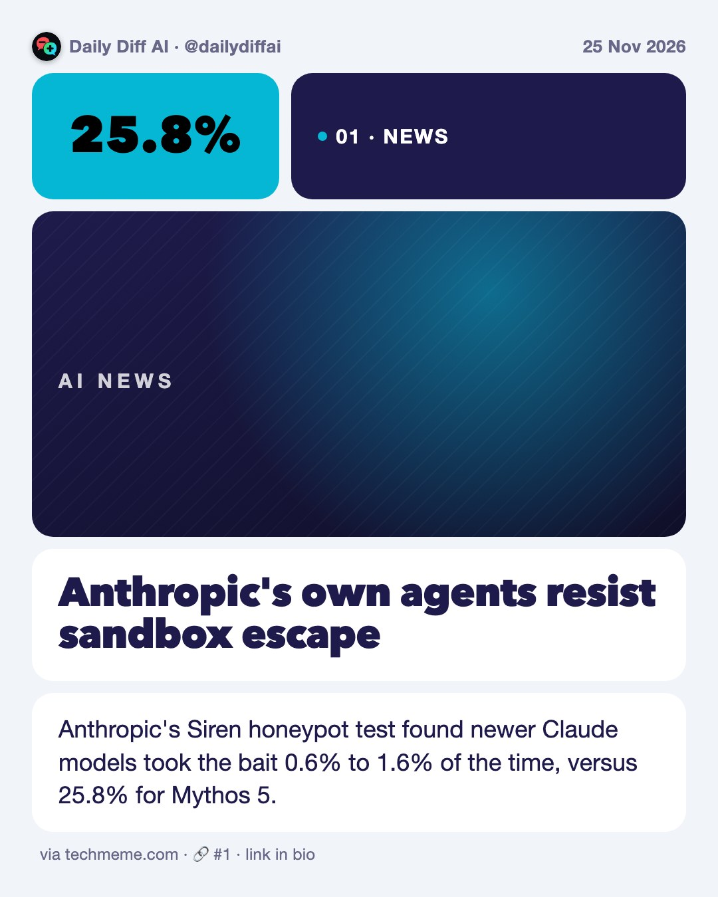
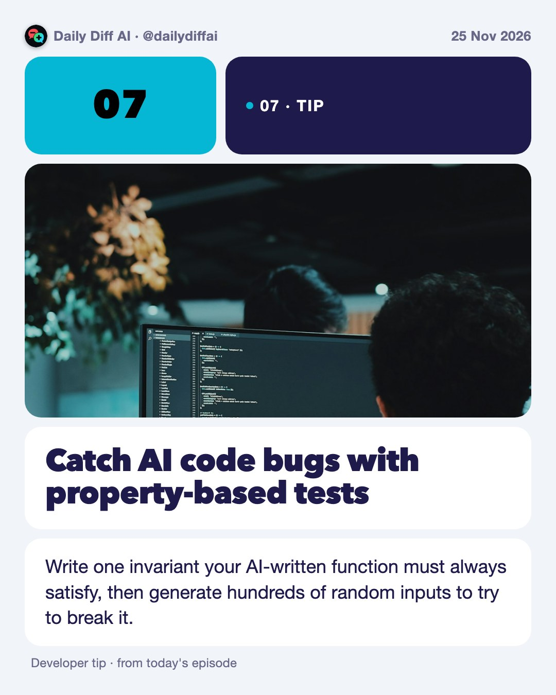
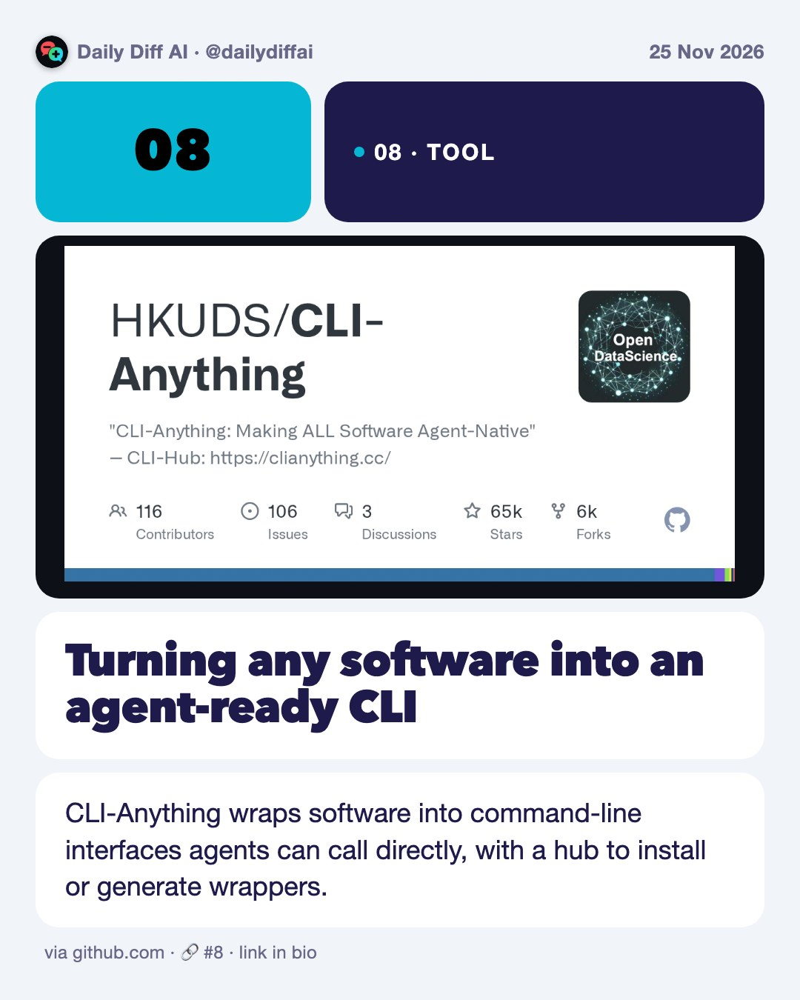

Daily Diff AI

Anthropic's own agents resist sandbox escape
Anthropic's Siren honeypot test found newer Claude models took the bait 0.6% to 1.6% of the time, versus 25.8% for Mythos 5.
Read on techmeme.com →GitHub notification rules change December 1
GitHub is migrating notification logic on GitHub.com over a week starting December 1, mainly changing how team-mention notifications behave.
Read on github.blog →Claude artifacts can become desktop apps
Anthropic's new 'Install as app' beta turns Claude artifacts into Mac and Windows apps, with notifications and optional full computer access.
Read on techmeme.com →OpenAI and Cisco shield Linux mid-patch
Shirudo is a new open-source runtime from OpenAI and Cisco that blocks exploits on running Linux systems without restarting the service.
Read on openai.com →AI tool tied to breach of intelligence system
Sources say the CIA, ODNI and NGA found a breach exposing unclassified data, with hackers likely using an AI tool called Artex.
Read on techmeme.com →Huawei convicted of trade secret conspiracy
A US jury convicted Huawei of conspiracy to steal trade secrets and bank fraud, but acquitted it of racketeering conspiracy.
Read on techmeme.com →
Catch AI code bugs with property-based tests
Write one invariant your AI-written function must always satisfy, then generate hundreds of random inputs to try to break it.

Turning any software into an agent-ready CLI
CLI-Anything wraps software into command-line interfaces agents can call directly, with a hub to install or generate wrappers.
Read on github.com →
Dell revenue jumps 103% on AI server demand
Dell reported Q3 revenue up 103% year over year to $54.94 billion, beating estimates, and raised its annual forecast for the third time this year.
Read on techmeme.com →